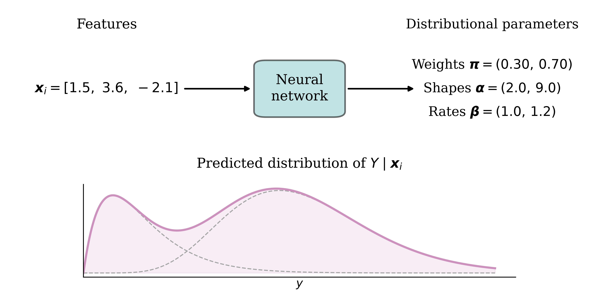
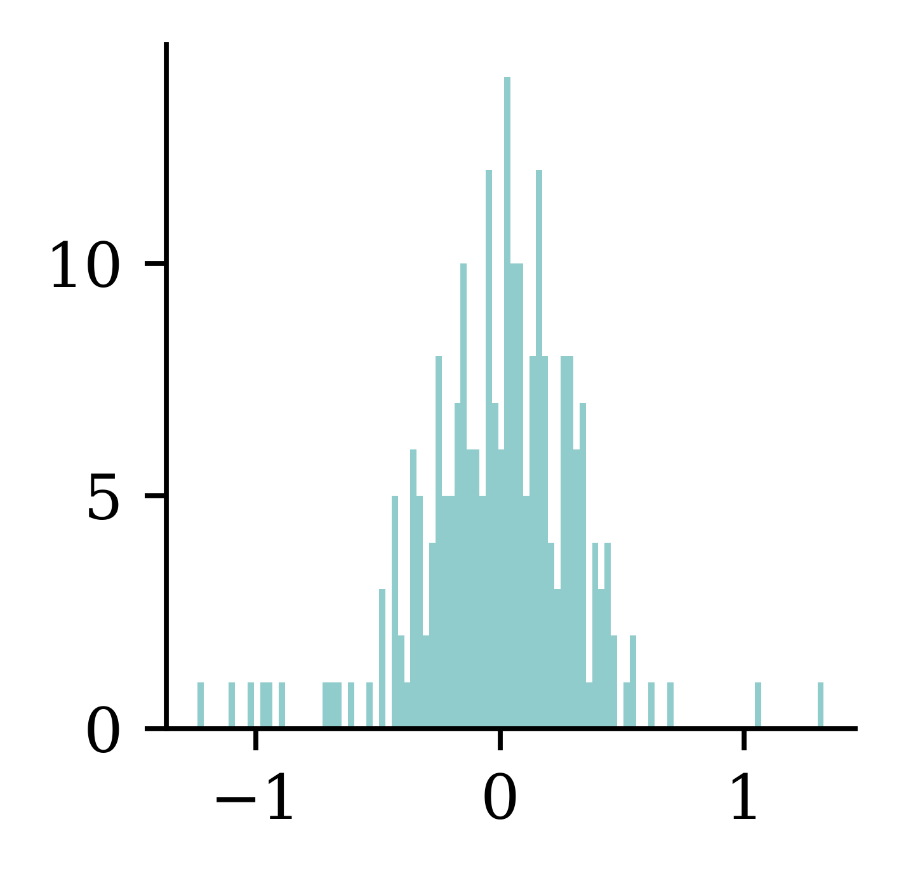
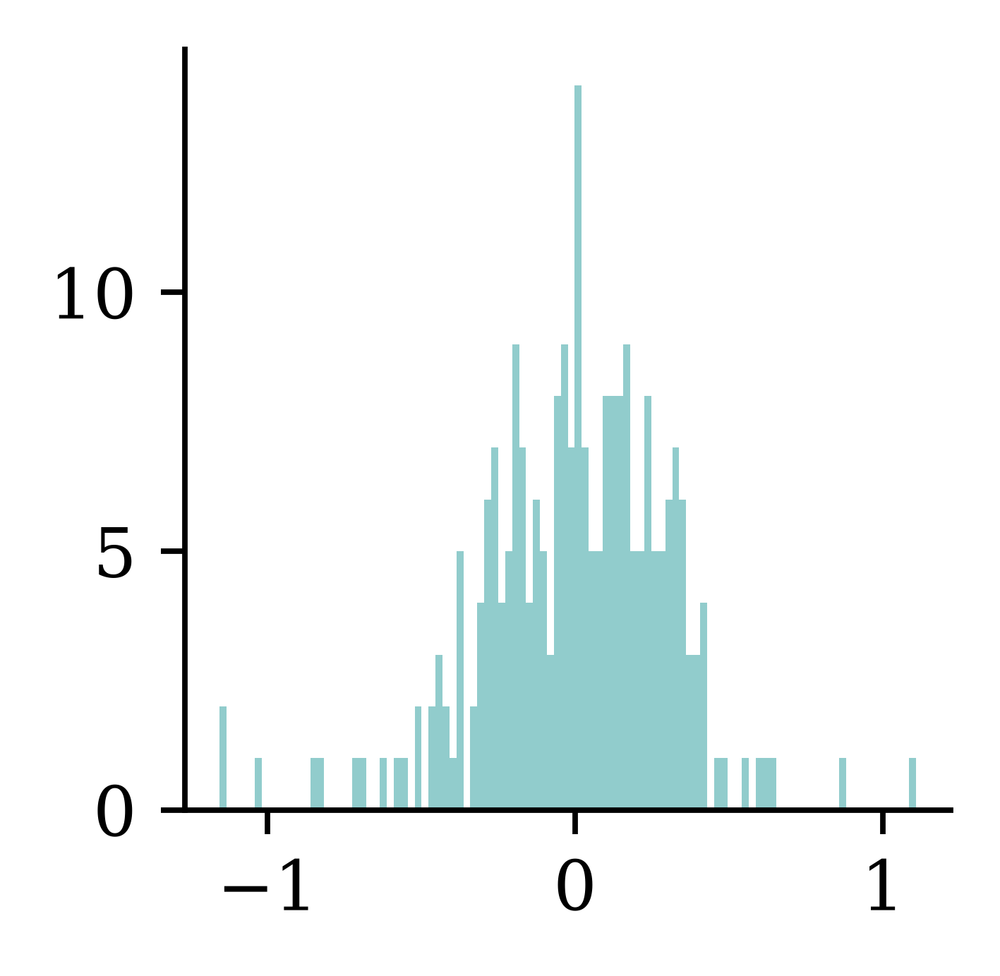
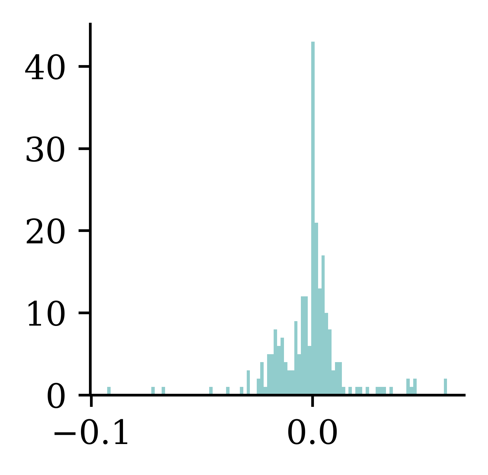

# Plot all on the same graphplt.figure()for i, (age, car_age, car_type, cost) inenumerate(data): mean = cost shape =2# Example shape parameter for the gamma distribution scale = mean / shape # Scale parameter to achieve the correct mean plt.plot(x, stats.gamma.pdf(x, a=shape, scale=scale), label=f"Customer {i+1}", color=COLOURS[i])plt.title(f"Predicted Claim Size Distribution")plt.xlabel("Claim size")plt.ylabel("Density")plt.legend()
where \hat{y}_i is the predicted value for the ith observation.
Visualising the distribution of each Y
Code
# Generate sample data for linear regressionnp.random.seed(0)X_toy = np.linspace(0, 10, 10)np.random.shuffle(X_toy)beta_0 =2beta_1 =3y_toy = beta_0 + beta_1 * X_toy + np.random.normal(scale=2, size=X_toy.shape)sigma_toy =2# Assuming a standard deviation for the normal distribution# Fit a simple linear regression modelcoefficients = np.polyfit(X_toy, y_toy, 1)predicted_y = np.polyval(coefficients, X_toy)# Plot the data points and the fitted lineplt.scatter(X_toy, y_toy, label='Data Points')plt.plot(X_toy, predicted_y, color='red', label='Fitted Line')# Draw the normal distribution bell curve sideways at each data pointfor i inrange(len(X_toy)): mu = predicted_y[i] y_values = np.linspace(mu -4*sigma_toy, mu +4*sigma_toy, 100) x_values = stats.norm.pdf(y_values, mu, sigma_toy) + X_toy[i] plt.plot(x_values, y_values, color='blue', alpha=0.5)plt.xlabel('$x$')plt.ylabel('$y$')plt.legend()
The probabilistic view
Y_i \sim \mathcal{N}(\mu_i, \sigma^2)
where \mu_i = \beta_0 + \beta_1 x_{i1} + \ldots + \beta_p x_{ip}, and the \sigma^2 is known.
The \mathcal{N}(\mu, \sigma^2) normal distribution has p.d.f.
A Gamma distribution with mean \mu and dispersion \phi has p.d.f.
f(y; \mu, \phi) = \frac{(\mu \phi)^{-\frac{1}{\phi}}}{\Gamma\left(\frac{1}{\phi}\right)} y^{\frac{1}{\phi} - 1} \mathrm{e}^{-\frac{y}{\mu \phi}}
Our model is Y|\boldsymbol{X}=\boldsymbol{x} is Gamma distributed with a dispersion of \phi and a mean of \mu(\boldsymbol{x}; \boldsymbol{\beta}) = \exp\left(\left\langle \boldsymbol{\beta}, \boldsymbol{x} \right\rangle\right).
The likelihood function is
L(\boldsymbol{\beta}) = \prod_{i=1}^n \frac{(\mu_i \phi)^{-\frac{1}{\phi}}}{\Gamma\left(\frac{1}{\phi}\right)} y_i^{\frac{1}{\phi} - 1} \exp\left(-\frac{y_i}{\mu_i \phi}\right)
def noisy_autoregressive_forecast(model, X_val, sigma, suppress=False):""" Generate a multi-step forecast using the given model. """ multi_step = pd.Series(index=X_val.index, name="Multi Step")# Initialize the input data for forecasting input_data = X_val.iloc[0].values.reshape(1, -1)for i inrange(len(multi_step)):# Ensure input_data has the correct feature names input_df = pd.DataFrame(input_data, columns=X_val.columns)if suppress: next_value = model.predict(input_df, verbose=0)else: next_value = model.predict(input_df) next_value += np.random.normal(0, sigma) multi_step.iloc[i] = next_value# Append that prediction to the input for the next forecastif i +1<len(multi_step): input_data = np.append(input_data[:, 1:], next_value).reshape(1, -1)return multi_step
/Users/z3535837/Library/CloudStorage/Dropbox/Lecturing/ACTL3143/DeepLearningForActuaries/.venv/lib/python3.14/site-packages/scipy/stats/_axis_nan_policy.py:592: UserWarning: scipy.stats.shapiro: For N > 5000, computed p-value may not be accurate. Current N is 6582.
res = hypotest_fun_out(*samples, **kwds)
Doesn’t prove that Y | \boldsymbol{X} = \boldsymbol{x} is multimodal
Code
# Make some example where the distribution is multimodal because of a binary covariate which separates the means of the two distributionsnp.random.seed(1)fig, axes = plt.subplots(3, 1, figsize=(5.0, 3.0), sharex=True)x_min =0x_max = y_train.max()x_grid = np.linspace(x_min, x_max, 100)# Simulate some data from an exponential distribution which has Pr(X < 1000) = 0.9n =100p =0.1lambda_ =-np.log(p) /1000mu =1/ lambda_y_1 = np.random.exponential(scale=mu, size=n)# Pick a truncated normal distribution with a mean of 1100 and std of 250 (truncated to be positive)mu =1100sigma =100y_2 = stats.truncnorm.rvs((0- mu) / sigma, (np.inf - mu) / sigma, loc=mu, scale=sigma, size=n)# Combine y_1 and y_2 for the final histogramy = np.concatenate([y_1, y_2])# Determine common binsbins = np.histogram_bin_edges(y, bins=30)# Plot each normal distribution with different means verticallyfor i, ax inenumerate(axes):if i ==0: ax.hist(y_1, bins=bins, density=True, color=COLOURS[i+1]) ax.set_ylabel(f'$f(y | x = 1)$')elif i ==1: ax.hist(y_2, bins=bins, density=True, color=COLOURS[i+1]) ax.set_ylabel(f'$f(y | x = 2)$')else: ax.hist(y, bins=bins, density=True) ax.set_ylabel(f'$f(y)$')plt.tight_layout();
Then, it estimates the conditional mean of Y given a new instance \boldsymbol{x}=(1, x_1, x_2, x_3) as follows:
\mathbb{E}[Y|\boldsymbol{X}=\boldsymbol{x}] = g^{-1}(\langle \boldsymbol{\beta}, \boldsymbol{x}\rangle) = \exp\big(\beta_0 + \beta_1 x_1 + \beta_2 x_2 + \beta_3 x_3 \big).
A GLM can model any other exponential family distribution using an appropriate link function g.
Gamma GLM loss
If Y|\boldsymbol{X}=\boldsymbol{x} is a Gamma r.v. with mean \mu(\boldsymbol{x}; \boldsymbol{\beta}) and dispersion parameter \phi, we can minimise the negative log-likelihood (NLL)
\text{NLL} \propto \sum_{i=1}^{n}\log \mu (\boldsymbol{x}_i; \boldsymbol{\beta})+\frac{y_i}{\mu (\boldsymbol{x}_i; \boldsymbol{\beta})} + \text{const},
i.e., we ignore the dispersion parameter \phi while estimating the regression coefficients.
Fitting Steps
Step 1. Use the advanced second derivative iterative method to find the regression coefficients:
\boldsymbol{\beta}^* = \underset{\boldsymbol{\beta}}{\text{arg\,min}} \ \sum_{i=1}^{n}\log \mu (\boldsymbol{x}_i; \boldsymbol{\beta})+\frac{y_i}{\mu (\boldsymbol{x}_i; \boldsymbol{\beta})}
(Here, p is the number of coefficients in the model. If this p doesn’t include the intercept, then the scaling should be \frac{1}{n-(p+1)}.)
Code: Gamma GLM
In Python, we can fit a Gamma GLM as follows:
import statsmodels.api as sm# Add a column of ones to include an intercept in the modelX_train_design = sm.add_constant(X_train)# Create a Gamma GLM with a log link functiongamma_glm = sm.GLM(y_train, X_train_design, family=sm.families.Gamma(sm.families.links.Log()))# Fit the modelgamma_glm = gamma_glm.fit()
The Combined Actuarial Neural Network is an actuarial neural network architecture proposed by Schelldorfer and Wüthrich (2019). We summarise the CANN approach as follows:
Find coefficients \boldsymbol{\beta} of the GLM with a link function g(\cdot).
Find weights \boldsymbol{w} = (\boldsymbol{w}^{(1)}, \dots, \boldsymbol{w}^{(K+1)}) of a neural network s:\mathbb{R}^{p}\to\mathbb{R}.
# Ensure reproducibilityrandom.seed(1)# Make a 4x1 grid of plotsfig, axes = plt.subplots(4, 1, figsize=(5.0, 3.0), sharex=True)# Define the x-axisx_min =0x_max =5000x_grid = np.linspace(x_min, x_max, 100)# Plot a few Gamma distribution pdfs with different means.# Then plot Gamma distributions with shifted means and the same dispersion parameter.glm_means = [1000, 3000, 2000, 4000]cann_means = [1500, 1400, 3000, 5000]for i, ax inenumerate(axes): ax.plot(x_grid, stats.gamma.pdf(x_grid, a=2, scale=glm_means[i]/2), label=f'GLM') ax.plot(x_grid, stats.gamma.pdf(x_grid, a=2, scale=cann_means[i]/2), label=f'CANN') ax.set_ylabel(f'$f(y | x_{i+1})$')if i ==0: ax.legend(["GLM", "CANN"], loc="upper right", ncol=2)
Given a finite set of resulting random variables (Y_1, \ldots, Y_{K}), one can generate a multinomial random variable Y\sim \text{Multinomial}(1, \boldsymbol{\pi}). Meanwhile, Y can be regarded as a mixture of Y_1, \ldots, Y_{K}, i.e.,
Y = \begin{cases}
Y_1 & \text{w.p. } \pi_1, \\
\vdots & \vdots\\
Y_K & \text{w.p. } \pi_K, \\
\end{cases}
where we define a finite set of weights \boldsymbol{\pi}=(\pi_{1} \ldots, \pi_{K}) such that \pi_k \ge 0 for k \in \{1, \ldots, K\} and \sum_{k=1}^{K}\pi_k=1.
Mixture Distribution
Let f_k and F_k be the p.d.f. and the c.d.f of Y_k|\boldsymbol{X} for all k \in \{1, \ldots, K\}.
The random variable Y|\boldsymbol{X}, which mixes Y_k|\boldsymbol{X}’s with weights \pi_k’s, has the density function
f_{Y|\boldsymbol{X}}(y|\boldsymbol{x}) = \sum_{k=1}^{K}\pi_k(\boldsymbol{x}) f_{k}(y|\boldsymbol{x}),
and the cumulative distribution function
F_{Y|\boldsymbol{X}}(y|\boldsymbol{x}) = \sum_{k=1}^{K}\pi_k(\boldsymbol{x}) F_{k}(y|\boldsymbol{x}).
Mixture Density Network
A mixture density network (MDN) \text{MDN}(\boldsymbol{x}) outputs each distribution component’s mixing weights and parameters of Y given the input features \boldsymbol{x}, i.e.,
\text{MDN}(\boldsymbol{x})=(\boldsymbol{\pi}(\boldsymbol{x};\boldsymbol{w}^*), \boldsymbol{\theta}(\boldsymbol{x};\boldsymbol{w}^*)),
where \boldsymbol{w}^* is the networks’ weights found by minimising the following negative log-likelihood loss function, i.e.,
\boldsymbol{w}^* = \underset{\boldsymbol{w}}{\text{arg\,min}} \
\mathcal{L}(\mathcal{D}, \boldsymbol{w})= - \sum_{i=1}^{n} \log f_{Y|\boldsymbol{X}}(y_i|\boldsymbol{x}, \boldsymbol{w}),
where \mathcal{D}=\{(\boldsymbol{x}_i,y_i)\}_{i=1}^{n} is the training dataset.
Mixture Density Network
An MDN that outputs the parameters for a K component mixture distribution. \boldsymbol{\theta}_k(\boldsymbol{x}; \boldsymbol{w}^*)= (\theta_{k,1}(\boldsymbol{x}; \boldsymbol{w}^*), \ldots, \theta_{k,|\boldsymbol{\theta}_k|}(\boldsymbol{x}; \boldsymbol{w}^*)) consists of the parameter estimates for the kth mixture component.
Model Specification
Suppose there are two types of claims:
Type I: Y_1|\boldsymbol{X}=\boldsymbol{x}\sim \text{Gamma}(\alpha_1(\boldsymbol{x}), \beta_1(\boldsymbol{x})) and,
Type II: Y_2|\boldsymbol{X}=\boldsymbol{x}\sim \text{Gamma}(\alpha_2(\boldsymbol{x}), \beta_2(\boldsymbol{x})).
The density of the actual claim amount Y|\boldsymbol{X}=\boldsymbol{x} follows
\begin{align*}
f_{Y|\boldsymbol{X}}(y|\boldsymbol{x})
&= \pi_1(\boldsymbol{x})\cdot \frac{\beta_1(\boldsymbol{x})^{\alpha_1(\boldsymbol{x})}}{\Gamma(\alpha_1(\boldsymbol{x}))}\mathrm{e}^{-\beta_1(\boldsymbol{x})y}y^{\alpha_1(\boldsymbol{x})-1} \\
&\quad + (1-\pi_1(\boldsymbol{x}))\cdot \frac{\beta_2(\boldsymbol{x})^{\alpha_2(\boldsymbol{x})}}{\Gamma(\alpha_2(\boldsymbol{x}))}\mathrm{e}^{-\beta_2(\boldsymbol{x})y}y^{\alpha_2(\boldsymbol{x})-1}.
\end{align*}
where \pi_1(\boldsymbol{x}) is the probability of a Type I claim given \boldsymbol{x}.
Output
The aim is to find the optimum weights
\boldsymbol{w}^* = \underset{w}{\text{arg\,min}} \ \mathcal{L}(\mathcal{D}, \boldsymbol{w})
for the Gamma mixture density network \text{MDN}(\boldsymbol{x}) that outputs the mixing weights, shapes and scales of Y given the input features \boldsymbol{x}, i.e.,
\begin{align*}
\text{MDN}(\boldsymbol{x})
= ( &\pi_1(\boldsymbol{x}; \boldsymbol{w}^*),
\pi_2(\boldsymbol{x}; \boldsymbol{w}^*), \\
&\alpha_1(\boldsymbol{x}; \boldsymbol{w}^*),
\alpha_2(\boldsymbol{x}; \boldsymbol{w}^*), \\
&\beta_1(\boldsymbol{x}; \boldsymbol{w}^*),
\beta_2(\boldsymbol{x}; \boldsymbol{w}^*)
).
\end{align*}
Architecture
We demonstrate the structure of a Gamma MDN that outputs the parameters for a Gamma mixture with two components.
Code: Architecture
The following code implements the gamma MDN from the previous slide.
A scoring rule is the equivalent of a loss function for distributional regression.
Denote S(F, y) to be the score given to the forecasted distribution F and an observation y \in \mathbb{R}.
Definition
A scoring rule is called proper if
\mathbb{E}_{Y \sim Q} S(Q, Y) \le \mathbb{E}_{Y \sim Q} S(F, Y)
for all F and Q distributions.
It is called strictly proper if equality holds only if F = Q.
Example Proper Scoring Rules
Logarithmic Score (NLL)
The logarithmic score is defined as
\mathrm{LogS}(f, y) = - \log f(y),
where f is the predictive density.
Continuous Ranked Probability Score (CRPS)
The continuous ranked probability score is defined as
\mathrm{crps}(F, y) = \int_{-\infty}^{\infty} (F(t) - {1}_{t\ge y})^2 \ \mathrm{d}t,
where F is the predicted c.d.f.
Likelihoods
Code
y_pred = np.polyval(coefficients, X_toy[:4])y_pred[2] *=1.1sigma_preds = sigma_toy * np.array([1.0, 3.0, 0.5, 0.5])fig, axes = plt.subplots(1, 4, figsize=(5.0, 3.0), sharey=True)x_min = y_pred[:4].min() -4*sigma_toyx_max = y_pred[:4].max() +4*sigma_toyx_grid = np.linspace(x_min, x_max, 100)# Plot each normal distribution with different means verticallyfor i, ax inenumerate(axes): y_grid = stats.norm.pdf(x_grid, y_pred[i], sigma_preds[i]) ax.plot(x_grid, y_grid) ax.plot([y_toy[i], y_toy[i]], [0, stats.norm.pdf(y_toy[i], y_pred[i], sigma_preds[i])], color='red', linestyle='--') ax.scatter([y_toy[i]], [stats.norm.pdf(y_toy[i], y_pred[i], sigma_preds[i])], color='red', zorder=10) ax.set_title(f'$f(y ; \\boldsymbol{{x}}_{{{i+1}}})$') ax.set_xticks([y_pred[i]], labels=[r'$\mu_{'+str(i+1) +r'}$'])# ax.set_ylim(0, 0.25)# Turn off the y axes ax.yaxis.set_visible(False)plt.tight_layout();

Code: NLL
def gamma_nll(mean, dispersion, y):# Calculate shape and scale parameters from mean and dispersion shape =1/ dispersion; scale = mean * dispersion# Create a gamma distribution object gamma_dist = stats.gamma(a=shape, scale=scale)return-np.mean(gamma_dist.logpdf(y))# GLMX_test_design = sm.add_constant(X_test)mus = gamma_glm.predict(X_test_design)nll_glm = gamma_nll(mus, phi_glm, y_test)# CANNmus = cann.predict(X_test, verbose=0)nll_cann = gamma_nll(mus, phi_cann, y_test)# MDNgamma_mdn.eval()with torch.no_grad(): X_test_t = torch.tensor(X_test.values, dtype=torch.float32) y_test_t = torch.tensor(y_test.values, dtype=torch.float32) pis, alphas, betas = gamma_mdn(X_test_t) nll_mdn = gamma_mixture_nll(pis, alphas, betas, y_test_t).item()
Data uncertainty \rightarrow epistemic uncertainty.
Traditional regularisation
Say all the m weights (excluding biases) are in the vector \boldsymbol{\theta}. If we change the loss function to
\text{Loss}_{1:n}
= \frac{1}{n} \sum_{i=1}^n \text{Loss}_i
+ \lambda \sum_{j=1}^{m} \left| \theta_j \right|
this would be using L^1 regularisation. A loss like
model = l2_model(0.0)weights = model.layers[0].get_weights()[0].flatten()print(f"Number of weights almost 0: {np.sum(np.abs(weights) <1e-5)}")plt.hist(weights, bins=100);
Number of weights almost 0: 0

model = l2_model(1.0)weights = model.layers[0].get_weights()[0].flatten()print(f"Number of weights almost 0: {np.sum(np.abs(weights) <1e-5)}")plt.hist(weights, bins=100);
Number of weights almost 0: 0

Weights before & after L^1
model = l1_model(0.0)weights = model.layers[0].get_weights()[0].flatten()print(f"Number of weights almost 0: {np.sum(np.abs(weights) <1e-5)}")plt.hist(weights, bins=100);
Number of weights almost 0: 0

model = l1_model(1.0)weights = model.layers[0].get_weights()[0].flatten()print(f"Number of weights almost 0: {np.sum(np.abs(weights) <1e-5)}")plt.hist(weights, bins=100);
Number of weights almost 0: 16
Early-stopping regularisation
A very different way to regularize iterative learning algorithms such as gradient descent is to stop training as soon as the validation error reaches a minimum. This is called early stopping… It is such a simple and efficient regularization technique that Geoffrey Hinton called it a “beautiful free lunch”.
Alternatively, you can try building a model with slightly more layers and neurons than you actually need, then use early stopping and other regularization techniques to prevent it from overfitting too much. Vincent Vanhoucke, a scientist at Google, has dubbed this the “stretch pants” approach: instead of wasting time looking for pants that perfectly match your size, just use large stretch pants that will shrink down to the right size.
Dropout
Lecture Outline
Introduction
Traditional Regression
Stochastic Forecasts
GLMs and Neural Networks
Combined Actuarial Neural Network
Mixture Density Network
Metrics for Distributional Regression
Aleatoric and Epistemic Uncertainty
Dropout
Ensembles
Dropout
An example of neurons dropped during training.
Dropout quote #1
It’s surprising at first that this destructive technique works at all. Would a company perform better if its employees were told to toss a coin every morning to decide whether or not to go to work? Well, who knows; perhaps it would! The company would be forced to adapt its organization; it could not rely on any single person to work the coffee machine or perform any other critical tasks, so this expertise would have to be spread across several people. Employees would have to learn to cooperate with many of their coworkers, not just a handful of them.
Dropout quote #2
The company would become much more resilient. If one person quit, it wouldn’t make much of a difference. It’s unclear whether this idea would actually work for companies, but it certainly does for neural networks. Neurons trained with dropout cannot co-adapt with their neighboring neurons; they have to be as useful as possible on their own. They also cannot rely excessively on just a few input neurons; they must pay attention to each of their input neurons. They end up being less sensitive to slight changes in the inputs. In the end, you get a more robust network that generalizes better.
By setting the training=True, we can let dropout happen during prediction stage as well. This will change predictions for the same output different. This is known as the Monte Carlo dropout and can be used to generate a distribution of predictions.
Dropout Limitation
Increased Training Time: Since dropout introduces noise into the training process, it can make the training process slower.
Sensitivity to Dropout Rates: the performance of dropout is highly dependent on the chosen dropout rate.
Ensembles
Lecture Outline
Introduction
Traditional Regression
Stochastic Forecasts
GLMs and Neural Networks
Combined Actuarial Neural Network
Mixture Density Network
Metrics for Distributional Regression
Aleatoric and Epistemic Uncertainty
Dropout
Ensembles
Ensembles
Combine many models to get better predictions.
Deep Ensembles
Train M neural networks with different random initial weights independently (even in parallel).
def build_model(seed): random.seed(seed) model = Sequential([ Dense(30, activation="leaky_relu"), Dense(1, activation="exponential") ]) model.compile("adam", "mse") es = EarlyStopping(restore_best_weights=True, patience=5) model.fit(X_train_sc, y_train, epochs=1_000, callbacks=[es], validation_data=(X_val_sc, y_val), verbose=False)return model
M =3seeds =range(M)models = []for seed in seeds: models.append(build_model(seed))
Deep Ensembles II
Say the trained weights for the NNs are \boldsymbol{w}^{(1)}, \ldots, \boldsymbol{w}^{(M)}, then we get predictions \bigl\{ \hat{y}(\boldsymbol{x}; \boldsymbol{w}^{(m)}) \bigr\}_{m=1}^{M}
y_preds = []for model in models: y_preds.append(model.predict(X_test_sc, verbose=0))y_preds = np.array(y_preds)y_preds